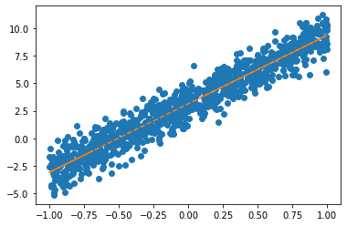

순환신경망 3
RNN1 - AbAcAd예제(2)
import
Define some functions
예비학습: net.parameters()의 의미
- iterator, generator의 개념필요 > 파이썬 iterable object
파이썬의 모든 것은 오브젝트이다.
함수도 오브젝트이고
리스트도 오브젝트이다..- 탐구시작: 네트워크 생성
Parameter containing:
tensor([[-0.7051]], requires_grad=True)- torch.optim.SGD? 를 확인하면 params에 대한 설명에 아래와 같이 되어있음.
params (iterable): iterable of parameters to optimize or dicts defining
parameter groups- 설명을 읽어보면 params에 iterable object를 넣으라고 되어있음 (ieterable object는 숨겨진 명령어로 __iter__를 가지고 있는 오브젝트를 의미)
- 무슨의미?
Parameter containing:
tensor([[-0.7051]], requires_grad=True)
Parameter containing:
tensor([-0.6763], requires_grad=True)- 그냥 이런느낌인데?
Parameter containing:
tensor([[-0.7051]], requires_grad=True)
Parameter containing:
tensor([-0.6763], requires_grad=True)- 결론: net.parameters()는 net오브젝트에서 학습할 파라메터를 모두 모아 리스트 같은 iterable object로 만드는 함수라 이해할 수 있다.
- 응용예제1


- 응용예제2
- iterable을 만드는 가장 쉬운 방법은 리스트를 만드는것! (즉, iterable object로 만들자)
- What \(\to\) [What]


Exam4: AbAcAd(2)
data
- 기존의 정리방식
- 이번에는 원핫인코딩 형태까지 미리 정의하자. (임베딩 레이어 안쓸예정)
실패했던 풀이: 구현1
- 저번시간의 실패한 풀이
네트워크 쪼개기
- Tanh까지만 클래스로 바꾸어서 구현
## step1. 요 두줄 따로 떼네서 요부분만 수행하는 네트워크를 따로만들고 (Hnet)
torch.nn.Embedding(num_embeddings=4, embedding_dim=2),
torch.nn.Tanh(),## step3. 이렇게 2개의 네트워크를 만들고, 2개의 네트워크에 해당되는 파라미터들을 전달해서 학습을 시킬 것
## + 2개의 네트워크로 쪼개서 파라미터를 각각 리스트 형태로 전달할 것이기 때문에 위에서 한 예비학습이 필요했다.- for문 돌릴준비
- for문 20회반복
- linr(hnet(x)) 적합결과 <- 숫자체크
실패했던 풀이: 구현2
- Tanh까지 구현한 클래스
- for문돌릴준비
- for문: 20회반복
(tensor([-0.4504, 0.6483], grad_fn=<TanhBackward0>),
tensor([[-0.4504, 0.6483]], grad_fn=<TanhBackward0>))- linr(hnet(x)) 적합결과 <- 숫자체크
tensor([[-0.3589, 0.7921, -0.1970, -0.0302],
[-0.2912, 0.8140, -0.2032, 0.0178],
[-0.3589, 0.7921, -0.1970, -0.0302],
...,
[-0.3589, 0.7921, -0.1970, -0.0302],
[-0.1065, 0.6307, -0.0874, 0.1821],
[-0.3589, 0.7921, -0.1970, -0.0302]], grad_fn=<AddmmBackward0>)순환신경망의 아이디어
모티브
(예비생각1) h에 대한 이해
는 사실 문자열 ’abcd’들을 숫자로 바꾼 또 다른 형식의 숫자표현이라 해석할 수 있음. 즉 원핫인코딩과 다른 또 다른 형태의 숫자표현이라 해석할 수 있다. (사실 원핫인코딩보다 약간 더 (1) 액기스만 남은 느낌 + (2) 숙성된 느낌을 준다)
(why1) h는 “학습을 용이하게 하기 위해서 x를 적당히 선형적으로 전처리한 상태”라고 이해가능
(why2) 실제로 예시를 살펴보면 그러했다
(예비생각2) 수백년전통을 이어가는 방법
“1리터에 500만원에 낙찰된 적 있습니다.”
“2kg에 1억원 정도 추산됩니다.”
“20여 종 종자장을 블렌딩해 100ml에 5000만원씩 분양 예정입니다.”
모두 씨간장(종자장) 가격에 관한 실제 일화다.
(중략...)
위스키나 와인처럼 블렌딩을 하기도 한다.
새로 담근 간장에 씨간장을 넣거나, 씨간장독에 햇간장을 넣어 맛을 유지하기도 한다.
이를 겹장(또는 덧장)이라 한다.
몇몇 종갓집에선 씨간장 잇기를 몇백 년째 해오고 있다.
매년 새로 간장을 담가야 이어갈 수 있으니 불씨 꺼트리지 않는 것처럼 굉장히 어려운 일이다.
이렇게 하는 이유는 집집마다 내려오는 고유 장맛을 잃지 않기 위함이다.
씨간장이란 그만큼 소중한 주방의 자산이며 정체성이다.덧장: 새로운 간장을 만들 때, 옛날간장을 섞어서 만듦.
* 기존방식: \(\text{콩물} \overset{\text{숙성}}{\longrightarrow} \text{간장}\)
* 수백년 전통의 간장맛을 유지하는 방식
- \(\text{콩물}_1 \overset{\text{숙성}}{\longrightarrow} \text{간장}_1\)
- \(\text{콩물}_2, \text{간장}_1 \overset{\text{숙성}}{\longrightarrow} \text{간장}_2\)
- \(\text{콩물}_3, \text{간장}_2 \overset{\text{숙성}}{\longrightarrow} \text{간장}_3\)
* 수백년 전통의 간장맛을 유지하면서 조리를 한다면?
\(\text{콩물}_1 \overset{\text{숙성}}{\longrightarrow} \text{간장}_1 \overset{\text{조리}}{\longrightarrow} \text{간장계란밥}_1\)
\(\text{콩물}_2, \text{간장}_1 \overset{\text{숙성}}{\longrightarrow} \text{간장}_2 \overset{\text{조리}}{\longrightarrow} \text{간장계란밥}_2\)
\(\text{콩물}_3, \text{간장}_2 \overset{\text{숙성}}{\longrightarrow} \text{간장}_3 \overset{\text{조리}}{\longrightarrow} \text{간장계란밥}_3\)
점점 맛있는 간장계란밥이 탄생함.
* 알고리즘 편의상 아래와 같이 생각해도 무방.
\(\text{콩물}_1, \text{간장}_0 \overset{\text{숙성}}{\longrightarrow} \text{간장}_1 \overset{\text{조리}}{\longrightarrow} \text{간장계란밥}_1 ,\quad \text{간장}_0=\text{맹물}\)
\(\text{콩물}_2, \text{간장}_1 \overset{\text{숙성}}{\longrightarrow} \text{간장}_2 \overset{\text{조리}}{\longrightarrow} \text{간장계란밥}_2\)
\(\text{콩물}_3, \text{간장}_2 \overset{\text{숙성}}{\longrightarrow} \text{간장}_3 \overset{\text{조리}}{\longrightarrow} \text{간장계란밥}_3\)
아이디어
* 수백년 전통의 간장맛을 유지하면서 조리하는 과정을 수식으로?
\(\boldsymbol{x}_1, \boldsymbol{h}_0 \overset{\text{숙성}}{\longrightarrow} \boldsymbol{h}_1 \overset{\text{조리}}{\longrightarrow} \hat{\boldsymbol y}_1\)
\(\boldsymbol{x}_2, \boldsymbol{h}_1 \overset{\text{숙성}}{\longrightarrow} \boldsymbol{h}_2 \overset{\text{조리}}{\longrightarrow} \hat{\boldsymbol y}_2\)
\(\boldsymbol{x}_3, \boldsymbol{h}_2 \overset{\text{숙성}}{\longrightarrow} \boldsymbol{h}_3 \overset{\text{조리}}{\longrightarrow} \hat{\boldsymbol y}_3\)
이제 우리가 배울것은 (1)“\(\text{콩물}_{t}\)”와 “\(\text{간장}_{t-1}\)”로 “\(\text{간장}_{t}\)”를 숙성하는 방법 (2) “\(\text{간장}_{t}\)”으로 “\(\text{간장계란밥}_{t}\)”을 조리하는 방법이다.
즉 숙성담당 네트워크와 조리담당 네트워크를 각각 만들어 학습하면 된다.
알고리즘
세부적인 알고리즘(\(t=0,1,2,\dots\)에 대하여 한줄 한줄 쓴 알고리즘)
(1) \(t=0\)
\({\boldsymbol h}_0=[[0,0]] \leftarrow \text{간장}_0\)은 맹물로 초기화
(2) \(t=1\)
\({\boldsymbol h}_1= \tanh({\boldsymbol x}_1{\bf W}_{ih}+{\boldsymbol h}_0{\bf W}_{hh}+{\boldsymbol b}_{ih}+{\boldsymbol b}_{hh})\)
\({\boldsymbol x}_1: (1,4)\)
\({\bf W}_{ih}: (4,2)\)
\({\boldsymbol h}_0: (1,2)\)
\({\bf W}_hh: (2,2)\)
\({\boldsymbol b}_{ih}: (1,2)\)
\({\boldsymbol b}_{hh}: (1,2)\)
\({\boldsymbol o}_1= {\bf W}_{ho}{\boldsymbol h}_1+{\boldsymbol b}_{ho}\)
\(\hat{\boldsymbol y}_1 = \text{soft}({\boldsymbol o}_1)\)
좀 더 일반화된 알고리즘
(ver1)
init \(\boldsymbol{h}_0\)
for \(t\) in \(1\):\(T\)
\({\boldsymbol h}_t= \tanh({\boldsymbol x}_t{\bf W}_{ih}+{\boldsymbol h}_{t-1}{\bf W}_{hh}+{\boldsymbol b}_{ih}+{\boldsymbol b}_{hh})\)
\({\boldsymbol o}_t= {\bf W}_{ho}{\boldsymbol h}_1+{\boldsymbol b}_{ho}\)
\(\hat{\boldsymbol y}_t = \text{soft}({\boldsymbol o}_t)\)
(ver2)
init hidden
for t in 1:T
hidden = tanh(linr(x)+linr(hidden))
output = linr(hidden)
yt_hat = soft(output)- 코드상으로는 \(h_t\)와 \(h_{t-1}\)의 구분이 교묘하게 사라진다. (그래서 오히려 좋아.)
전체 알고리즘은 대충 아래와 같은 형식으로 구현될 수 있음.
class rNNCell(torch.nn.Module):
def __init__(self):
super().__init__()
linr1 = torch.nn.Linear(?,?)
linr2 = torch.nn.Linear(?,?)
tanh = torch.nn.Tanh()
def forward(self,x,hidden):
hidden = tanh(lrnr1(x)+lrnr2(hidden))
return hidden
init ht
rnncell = rNNCell()
for t in 1:T
xt, yt = x[[t]], y[[t]]
ht = rnncell(xt, ht)
ot = linr(ht)
loss = loss + loss_fn(ot, yt)
숙제
아래와 같은 자료가 있다고 가정하자.
아래의 모형을 가정하고 \(\alpha_0, \alpha_1, \beta_0, \beta_1\)을 파이토치를 이용하여 추정하고자 한다.
- \(y_i = \alpha_0 + \beta_0 + \beta_1x_i + \alpha_1x_i + \epsilon_i,\quad \epsilon_i \sim N(0,\sigma^2)\)
아래는 이를 수행하기 위한 코드이다. ???를 적절히 채워서 코드를 완성하라.
- 3.14 근처
- 6.28근처
## 학습 후
plt.plot(x,y,'o')
plt.plot(x, (b+w*x).data,'--')
# plt.plot(x,((alpha0+alpha1)*x+(beta0+beta1)).data,'--')
- 학습이 잘 된 것 같다.